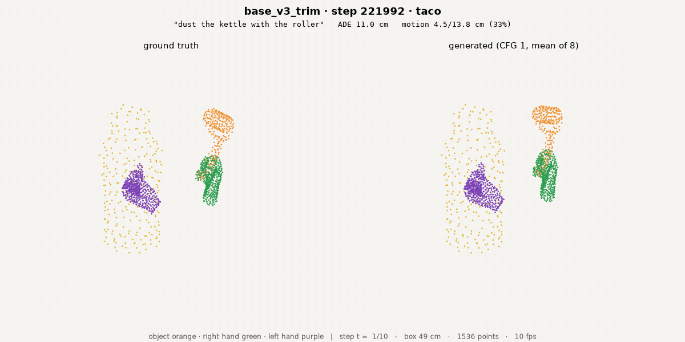
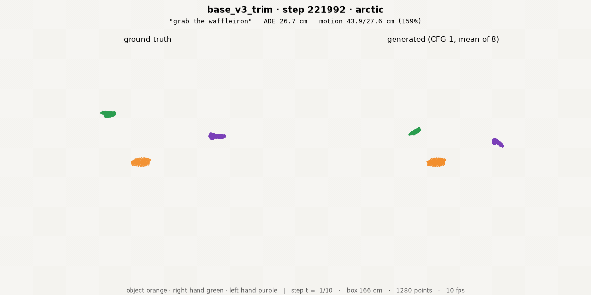
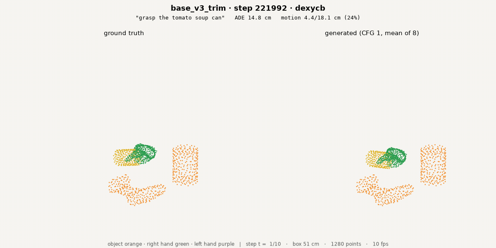
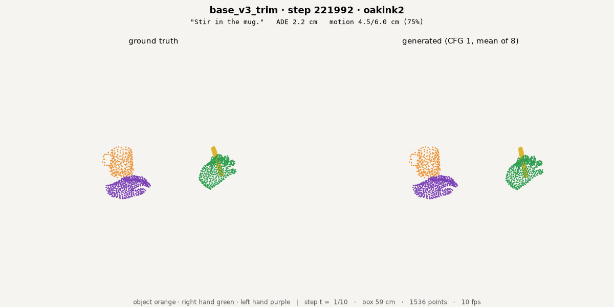
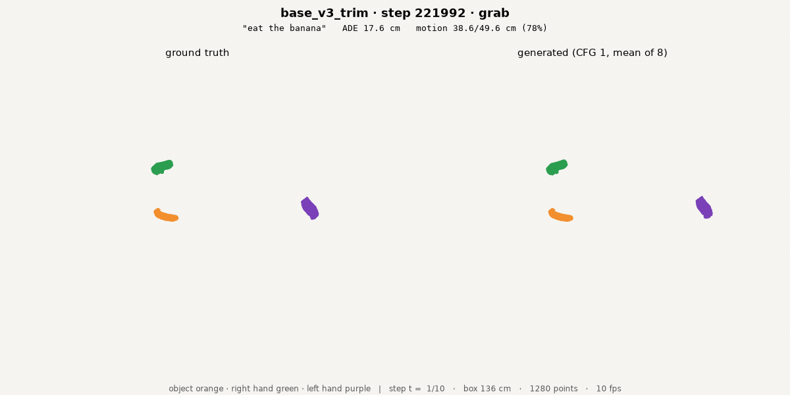
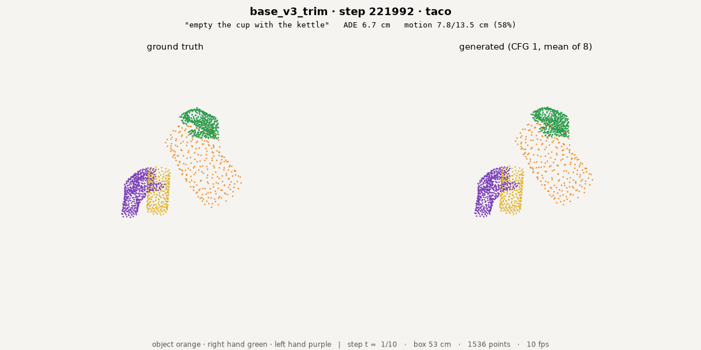
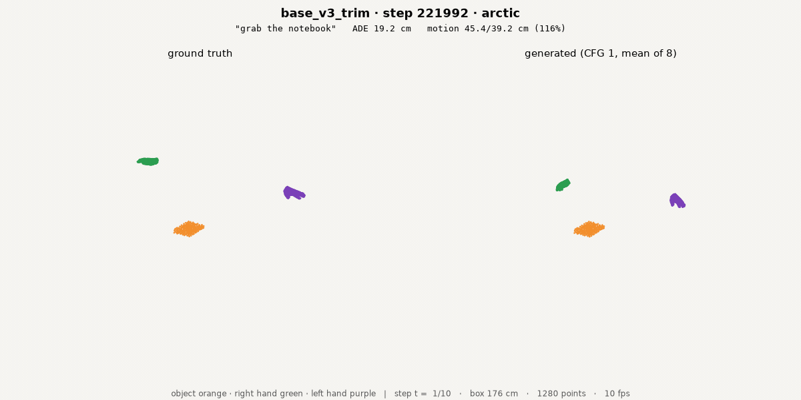
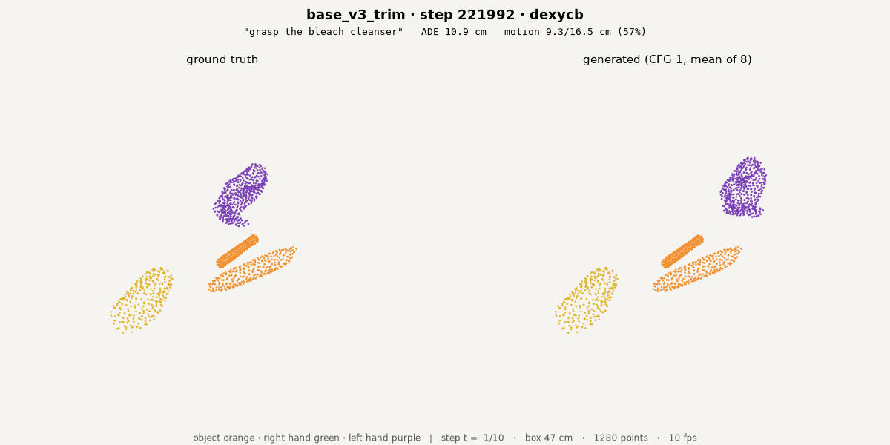
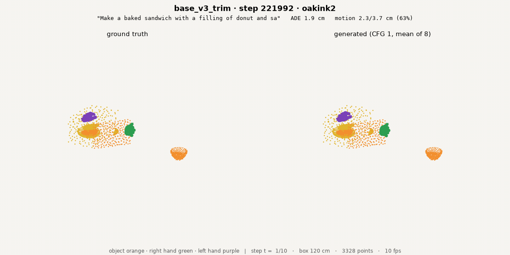
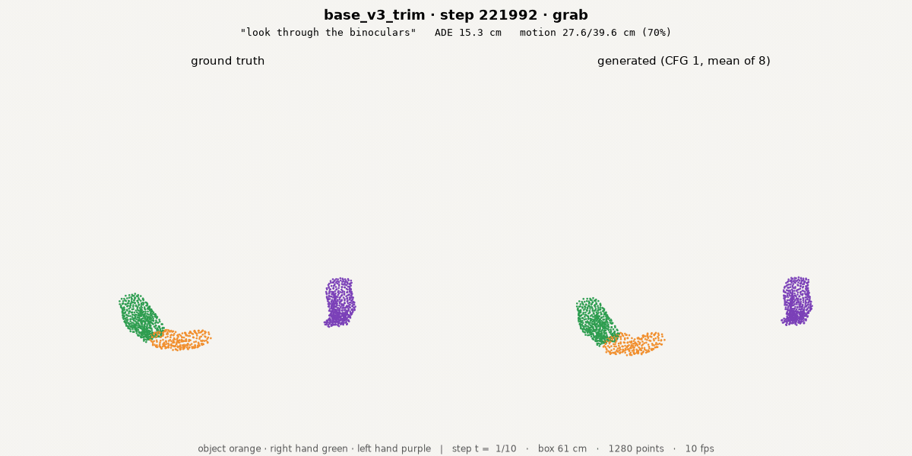

The 2× model: what it learned
3D-WAM · base_v3_trim 2× · one model, visualisations only
Lab meeting
2026. 09. 06
Presented by 김범준 (beomjun)
Core idea and training config · base_v3_trim 2×
- Core idea + config
- What the model saw
- What it did not see
- GR-1 closed loop
| input | model | output | decode | not used | claim |
|---|---|---|---|---|---|
| scene + embodiment as ONE dense labelled 3-D point set (hand 512 pts · object 256 pts · part labels) + 2 history frames + task text | language-conditioned flow-matching video-DiT predicts the TOTAL scene flow (hand + objects together) over the next 1 s · T = 10 @ 10 Hz | a 1 s trajectory for every input point, hand and objects in one prediction | hand flow → robot joints by per-link Procrustes + IK | no world model, no retargeter, no inverse dynamics | robot zero-shot execution of tasks demonstrated only by humans |
| data | |
|---|---|
| corpus | v2 · taco, arctic, dexycb, oakink2, grab, hot3d · 10 Hz · T = 10 |
| points | 512 / hand · 256 / object · ≤ 16 objects per chunk |
| index | part-aligned prefix · stored validity · motion filter on · chunk_stride 1 · chunks_per_episode 4 |
| contact | window filter, TRAIN index only · OakInk2 start 1.0 s / end 0.5 s · ARCTIC & GRAB end 0.5 s · 89.9 % of train chunks kept |
| frame | history H = 2 frames (0.1 / 0.2 s ago) · origin = hand centre + random jitter ≤ 1 m (origin_jitter_m 1.0) · yaw aug · up-axis z |
| text | T5-base, cached · entity phrases on · text dropout 0.05 |
| model | |
|---|---|
| backbone | video-DiT 120M · d 768 · depth 12 · heads 12 · mlp 4.0 · qk-norm |
| tokens | patch · k = 8 part-major Hilbert patches |
| attention | full 3-D attention · time-only RoPE |
| target | v-parameterisation · flow matching |
| conditioning | history channels · entity_text true |
| sampler | 16 Euler steps · CFG 1.0 (eval) |
| EMA | 0.999 |
| weights · /s3ckpt/beomjun/3dwam/base_v3_trim/weights_final.pt | |
| optimisation | |
|---|---|
| optimiser | AdamW · lr 3e-4 · betas 0.9 / 0.95 · wd 0.05 |
| schedule | warmup 300 · cosine to 0.1× · grad clip 1.0 |
| batch | 8 × 4 GPUs × accum 1 = eff 32 · micro_batch_points 98,304 · bucket by P |
| steps | 221,992 = 2 × 110,996 · resumed from the 1× weights |
| eff. epochs | ≈ 8.3 on the full v2 corpus · 9.2 on the kept train index |
| compute | 4 × H100 · ≈ 17 h total · ckpt every 30 min · iclr27 jobs 7784 → 8003 |
source: configs/base_v3_trim.yaml (verbatim) · eff ep = steps × eff batch ÷ corpus chunks · every number on this slide is in the tables
What the model saw · train chunks · 1 s
- Core idea + config
- What the model saw
- What it did not see
- GR-1 closed loop
base_v3_trim 2× · 221,992 st · 8.3 eff ep · each tile: GT left | prediction right (k = 8 averaged samples) · objects orange · right hand green · left hand purple
train chunk · rendering · ≈ 20:30 KST
train chunk · rendering · ≈ 20:30 KST
train chunk · rendering · ≈ 20:30 KST
train chunk · rendering · ≈ 20:30 KST
train chunk · rendering · ≈ 20:30 KST
train chunk · rendering · ≈ 20:30 KST
train chunk · rendering · ≈ 20:30 KST
train chunk · rendering · ≈ 20:30 KST
train chunk · rendering · ≈ 20:30 KST
train chunk · rendering · ≈ 20:30 KST
train chunks = inside the kept contact windows of the TRAIN index · same renderer, camera and k = 8 as the held-out slide · tiles swap to assets/train_<dataset>_…gif when the render lands
What it did not see · held-out val chunks · 1 s
- Core idea + config
- What the model saw
- What it did not see
- GR-1 closed loop
base_v3_trim 2× · 221,992 st · 8.3 eff ep · each tile: GT left | prediction right (k = 8 averaged samples) · objects orange · right hand green · left hand purple










val split = held-out TAKES (5 % sequence-hash split); tasks 62–100 % seen, objects 100 % seen; chunks chosen inside the contact windows
GR-1 closed loop · PnPCanToBowl · episode 0
- Core idea + config
- What the model saw
- What it did not see
- GR-1 closed loop
base_v3_trim 2× · 221,992 st · 8.3 eff ep · zero-shot, no fine-tuning · left: ego view · right: 3-D point flow, executed | predicted
MuJoCo · robosuite · GR1ArmsAndWaistFourierHands · right hand · two objects · human tag · cfg 1.0 · 16 steps · results.json: sweep_0906_trim2x/PnPCanToBowl